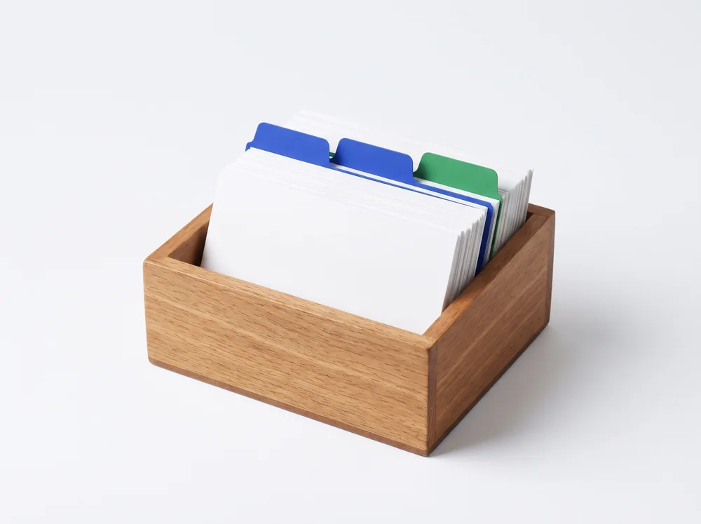
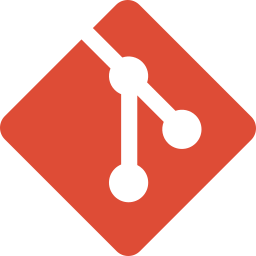
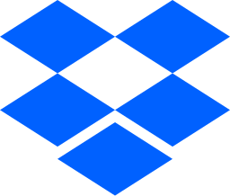

memory/
사람에 대한 기억만 둡니다. 정체성, 선호, 받은 피드백, 진행 중인 일이고, MEMORY.md 색인으로 찾아 들어갑니다.
HEADLESS HARNESS
지침과 기억, 지식, 기록이 몸통이고, 모델과 앱은 그 위에 얹히는 머리입니다. 더 좋은 모델이 나오면 그 모델로 바꾸고, 한 회사의 서비스가 멈추면 다른 회사 것으로 바꾸면 됩니다. 몸통은 어떤 모델을 쓰든 계속 자랍니다.
어떤 하네스로 열었는지는 워크스페이스에 적지 않습니다. 같은 폴더를 오늘은 Claude로, 내일은 Codex로 열 수 있어야 하기 때문입니다. 도구마다 다른 진입 파일, 셸, 삭제와 git 가능 여부, 자체 메모리는 하네스 프로파일에 적고, 새 도구가 나오면 프로파일만 더합니다.
검증한 하네스 6종
TOOL MEMORY
도구 메모리는 그대로 쓰되, 거기에는 많아야 폴더 안 파일을 가리키는 한 줄만 둡니다. 본문은 폴더에 씁니다. 한 도구가 기억했다고 답한 기록은 다른 PC나 다른 도구에서는 처음부터 없던 일이 되기 때문입니다.

gitSUPPORTED HARNESSES
하네스마다 처음 읽는 파일이 다릅니다. context-protocol은 하네스별 진입 파일을 깔아 두어, 어느 하네스로 열어도 같은 정본으로 들어가 같은 규칙으로 일합니다. 아래는 하네스마다 실제로 연결해 확인한 방식입니다.
연결한 폴더의 CLAUDE.md가 프로젝트 지침으로 들어가고, 그 지시를 따라 CONTEXT.md로 들어갑니다. 데스크톱과 클라우드 실행을 모두 다룹니다.
작업 폴더의 CLAUDE.md가 @CONTEXT.md로 정본을 바로 끌어옵니다. 터미널 CLI와 IDE 확장 모두 같습니다.
작업 폴더의 AGENTS.md를 프로젝트 지침으로 읽습니다. git 저장소가 아닌 드라이브 폴더에서도 같습니다.
AGENTS.md와 CLAUDE.md를 함께 읽고 같은 정본으로 들어갑니다. .cursor/rules 같은 별도 규칙 파일은 만들지 않습니다.
AGENTS.md를 읽고 정본으로 들어갑니다. IDE 1.20.5 이상에서 동작합니다.
AGENTS.md와 CLAUDE.md를 모두 읽고 정본으로 들어갑니다. 헤드리스로 돌릴 때는 프롬프트에 CONTEXT.md를 먼저 읽으라고 넣습니다.
RECORDS
대화에서 오래 쓸 사실이나 결정이 나오면, 에이전트는 따로 부탁받지 않아도 답한 뒤 종류에 맞는 자리에 적고 경로를 알려 줍니다. 셋은 섞지 않습니다.

사람에 대한 기억만 둡니다. 정체성, 선호, 받은 피드백, 진행 중인 일이고, MEMORY.md 색인으로 찾아 들어갑니다.
날짜가 있는 사건. 하루 한 파일에 무엇이 바뀌었는지 적고, 바뀐 원본도 함께 고칩니다.
정리된 지식. 한 주제에 한 파일을 둡니다. 파일이 들어 있는 폴더가 곧 분류라서 따로 고쳐 줄 목차 파일이 없습니다. 맞는 폴더가 없으면 새로 만듭니다.
INSTALL
사람은 zip을 건네고 질문에 답합니다. 설치기를 읽고 폴더를 꾸미는 일은 에이전트가 합니다.
Releases에서 context-protocol-<버전>.zip을 받습니다. 같은 버전에 -b2, -b3이 있으면 번호가 가장 큰 것을 씁니다.
Cowork는 프로젝트에 폴더를 연결합니다. Claude Code, Codex, Cursor, Antigravity, Grok Build는 그 폴더에서 실행합니다.
백엔드 종류 같은 질문에 답하면 끝납니다. 이미 쓰던 폴더면 덮어쓰지 않고 버전 차이만 적용합니다.
이 파일을 압축해제해서 설치해줘설치하면 생기는 것
<워크스페이스>/ CONTEXT.md 규칙 정본이자 세션 진입점 AGENTS.md 포털. Codex, Cursor 등이 읽고 CONTEXT.md로 넘어간다 CLAUDE.md 포털. Claude 계열이 읽고 CONTEXT.md로 넘어간다 _project.md 이 워크스페이스가 무엇인지 memory/MEMORY.md 메모리 색인 action-log/ 날짜별 사건 기록 _context-protocol/ 가이드, 온톨로지 규약, 백엔드와 하네스 프로파일, 도구
STORAGE
구글 드라이브에 두면 어느 PC에서 열어도 같은 폴더가 보입니다. PR로 검토를 거쳐 반영하려면 git을 고르면 됩니다.
여러 PC에서 같은 워크스페이스를 엽니다. 실측으로 확인했습니다.
PC 한 대에서 씁니다.
요청 하나를 커밋 하나로 묶고, 바로 반영하거나 PR까지만 만듭니다. 설치할 때 사용자가 고른 경우에만 씁니다.

예약프로파일이 아직 없어 폴백 규칙을 따릅니다.
PRESETS
프리셋은 설치 대상이 아닙니다. 설치를 마친 뒤 이름을 대며 요청할 때만 적용됩니다. 목록에 없는 이름을 대면 비슷한 것으로 대신하지 않고 먼저 묻습니다.
personal rag 프리셋으로 세팅해줘한 사람을 디지털 트윈으로 표현하는 개인 지식그래프
한 팀의 운영 지식. 중심 타입은 Decision
예비창업자와 초기창업기업의 사업 자료. 중심 타입은 가설
법령에서 사내 규정, 통제, 이행 증거로 이어지는 사슬
프로젝트급 개념 하나를 축과 측면으로 분해하는 뼈대
FOR AGENTS
규범은 전부 마크다운 문서입니다. 실행 코드나 바이너리가 섞여 있지 않아서 사람도 에이전트도 같은 글을 그대로 열어 읽습니다. 처음 읽는다면 아래 순서가 빠릅니다.
설치한 워크스페이스가 규칙을 지키는지 에이전트 없이 확인합니다. 위반이 있으면 종료 코드 1을 내므로 CI에 걸 수 있습니다.
python3 _context-protocol/tools/integrity_lint.py .LICENSE
PolyForm Noncommercial 1.0.0과 PolyForm Internal Use 1.0.0 중 하나를 골라 씁니다. OSI 기준의 오픈소스가 아니라 source-available입니다. 법적 효력은 원문에만 있습니다.
별도 계약판매와 납품은 따로 문의해주세요
FAQ
끄지 않아도 됩니다. 도구 메모리는 캐시로 쓰고, 거기에는 워크스페이스 파일을 가리키는 포인터 한 줄만 적습니다. 본문은 폴더의 memory/에 씁니다.
마크다운 규약과 설치기, 보조 도구 몇 개로 이뤄져 있습니다. 서버와 계정 없이, 이미 쓰는 하네스가 폴더를 읽고 쓰는 방식을 정합니다.
차이는 없애지 않고 프로파일에 적습니다. 파일 업로드만 되는 채팅에서는 폴더에 쓸 수 없어 열람 모드로만 씁니다.
덮어쓰지 않습니다. 같은 방법으로 새 zip을 건네면 기존 설치를 알아보고 버전 차이만 적용합니다. 변경 내역은 CHANGELOG에 있습니다.
폴더와 템플릿 생성은 비파괴라 바로 합니다. 기존 파일을 옮기는 일은 파일별 이동 계획과 이유를 먼저 보여 드리고 승인을 받은 뒤에만 합니다.